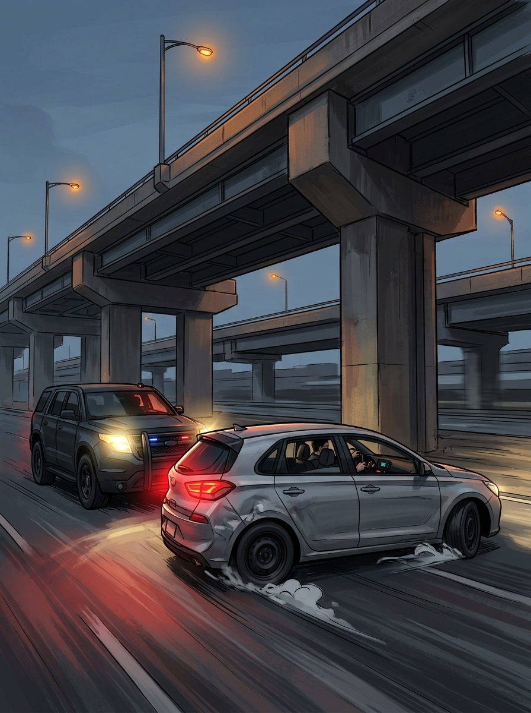

Satya TTRPG Movement, Encumbrance & Vehicles
Rust Engine Implementation:
crates/satya-engine/src/environment_vehicles.rs(SprintVelocityMetrics,CombatMovementGait,OverlandTravelPace,OverlandTerrainKind,CarryErgonomicMethod,LoadEncumbranceTier,BulkLoadAssessment,ChaseRangeBand,VehicleEnvelopeProfile,VehicleClass,VehicleId,VehicleCatalogSpec,VehicleFiringPlatformCondition,VehicleComponentZone,compute_stride_and_sprint_velocity,evaluate_combat_movement_gait,evaluate_overland_travel,compute_base_comfort_load_kg,evaluate_encumbrance_load,evaluate_encumbrance_with_bulk,canonical_vehicle_catalog,evaluate_vehicle_chase_exchange,evaluate_vehicle_firing_platform,evaluate_vehicle_component_damage,evaluate_collision_and_g_force). Companion chapter to Environmental Hazards, Survival & Field Pharmacology. Guided Play Example: See Guide 06 §5 (4-TickPack Quick-Release & Vehicle Triad Escape).
This chapter defines the canonical Movement, Load-Bearing Encumbrance, and Vehicular Pursuits, Firing Platforms & Component Physics for Satya (for definitions of all mathematical variables and formulas such as SF, Vsprint, Lbase, Leff, Tmax, Cmax, Fmax, see the Mathematical Notation, Variables & Formula Glossary). In keeping with Satya's simulation philosophy, movement speed is not an arbitrary fixed integer ("30 feet per turn") shared by every human regardless of stature, conditioning, or backpack weight, nor is vehicular combat hand-waved when chases erupt across rain-slicked expressways or maritime channels.
1. Movement Architecture: Combat & Non-Combat Gaits
A character's movement velocity is governed by their Speed (SPD), Fitness (FIT), Kinesthesis (KIN), Height (HGT stride length), Encumbrance Tier, and any Lower-Extremity Wounds (which directly slash their Tempo Cap Tmax).
1.1 Baseline Velocity Formulas (SPD, FIT & HGT)
- Stride Factor (
SF):SF = HGT1.75 m(Equals1.00for a1.75 mhuman;~1.09for a1.90 mtall runner;~0.91for a1.60 mcharacter). - Maximum Sprint Velocity (Vsprint in Meters per Second):Vsprint = (4.0 + 0.35 × SPDeff) × SF• At Human Average (
SPD 10, HGT 1.75 m): 7.50 m/s (27.0 km/h, or1.88 meters per Ticksince1 second = 4 Ticks).• At Athletic (SPD 14): 8.90 m/s (32.0 km/h, or2.23 m/Tick).• At Peak Human (SPD 18, Olympic Sprinter): 10.30 m/s (37.1 km/h, or2.58 m/Tick— matching a sub-10-second 100m dash!). - Sustained Overland Pace Factor: While
SPDgoverns explosive short-term burst speed,Fitness (FIT)governs how long a character can sustain a run or forced march without accumulating Fatigue (fatigue_level).
1.2 Tactical Combat Movement (Meters per Tick & Triad Interaction)
On the Count-Up Action Clock (1 Tick = 0.25s, 4 Ticks = 1s, 20 Ticks = 5s), a combatant chooses their Movement Gait, which determines how far they move per Tick and how much of their Tactical Pool (Peff) is available for simultaneous shooting or melee (Control & Force):
| Combat Gait Mode | Fraction of Vsprint | Speed at SPD 10 (m/s · m/Tick) | Distance per 10 Ticks (2.5s) | Tactical Triad (TCF) & Exertion Impact |
|---|---|---|---|---|
| 1. Prone / Low Crawl | 8% | 0.6 m/s · 0.15 m/Tick | 1.5 m | Maximizes low cover profile (+4 cover bonus vs. ranged); melee Tempo Cap reduced by -4; +1 Exertion Mark per 20 ticks. |
| 2. Stealth Creep / Crouch-Walk | 18% | 1.35 m/s · 0.34 m/Tick | 3.4 m | Quiet footplacement (Stealth KIN/FOC at +0 Δext); full weapon sight alignment (Control uncapped). |
| 3. Combat Glide / Tactical Walk | 35% | 2.6 m/s · 0.65 m/Tick | 6.5 m | Brisk heel-to-toe advance ("slicing the pie"); allows simultaneous aimed/controlled fire at +2 to Recoil (R) and 0 Exertion Marks. |
| 4. Bounding Run / Hustle | 65% | 4.9 m/s · 1.22 m/Tick | 12.2 m | Requires allocating at least Tempo >= B (neutral baseline); shooting on the move imposes +4 to Recoil (R) and caps ranged Control at ⌊ Cmax/2 ⌋; +1 Exertion Mark per 20 ticks. |
5. All-Out Sprint (Pure Tempo) | 100% | 7.5 m/s · 1.88 m/Tick | 18.8 m | Requires Pure Tempo allocation (Force = 0, Control <= 2); cannot fire aimed shots; accumulates +2 Exertion Marks per 20 ticks (5s). |
1.3 Special Movement Modes (Jumping, Climbing, Swimming & Zero-G)
- Jumping & Vaulting (Jumping / Parkour
KIN/SPD, powered byPOW):• Running Broad Jump: Base distance = 2.0 m + (0.25 m × POW) + (0.3 m × Cascade Successes) (4.5 mbaseline atPOW 10).• Standing Broad Jump:55%of Running Broad Jump (~2.5 matPOW 10).• Running High Jump / Wall Scaling: Base vertical clearance = 0.6 m + (0.06 m × POW) + (0.1 m × Successes) (1.2 mwaist/chest vault without hands; add0.8 × HGTwhen grabbing a ledge with hands and pulling up viaFOR/KIN). - Climbing (
FOR/KIN):• Ladder / Knotted Rope:0.5 m/Tick(2.0 m/s).• Rough Wall / Drainpipe / Rock Face:0.15 m/Tick(0.6 m/s), requiring a Climbing (FOR/KIN) cascade check with Δext set by surface holds and Encumbrance Tier (+2per Encumbrance Tier). - Swimming (Swimming & Diving
FIT/KIN):• Unencumbered surface swim speed is20%of Vsprint (1.5 m/sor0.38 m/TickatSPD 10, FIT 10).• Encumbrance in Water: Tier 2 (Tactical Load) imposes+4Δext to stay afloat; Tier 3+ (Heavy Load/ steel plates without flotation) drags the character downward at1.0 m/sunless jettisoned (12 ticksquick-release cutout)! For underwater depth pressure, Nitrogen Narcosis, and Decompression Sickness, see Environmental Hazards §5. - Zero-G / Microgravity EVA Movement (Zero-G Maneuver
KIN/INS):• In orbital or deep-space microgravity, movement follows Newtonian momentum: pushing off a bulkhead imparts a constant velocity vector (v = Impulse / MAS) that continues indefinitely until arrested by a handhold, mag-boot lock, or RCS thruster burst.• Missing a Zero-G Maneuver check while translating across an open bay leaves the character Adrift (Tempo = 0for directional changes unless firing a thruster or tether).
1.4 Non-Combat & Overland Travel Pace
For campaign travel across cities, wilderness, or operational theaters, movement is tracked per Minute (240 Ticks) or per Hour (14,400 Ticks):
| Overland Pace | Speed at SPD 10, FIT 10 (km/h · m/min) | Daily Range (8 hrs) | Metabolic & Fatigue Cost (FIT Check) |
|---|---|---|---|
| Cautious Recon / Trail-Finding | 3.0 km/h (50 m/min) | 24 km | Allows active Observation (SIG/HEA) and Stealth without penalty; 0 Fatigue if FIT >= 8. |
| Standard Marching / Walking Pace | 5.0 km/h (83 m/min) | 40 km | +1 fatigue_level after 8 hours (or 4 hours at Encumbrance Tier 2+). |
| Forced March / Double-Time | 7.0 km/h (117 m/min) | 56 km | Roll FIT / DIS every 2 hours (Δext = +2 × Encumbrance Tier) or gain +1 fatigue_level. |
| Sustained Cross-Country Run | 11.0+ km/h (183+ m/min) | Burst / 1–2 hrs | Roll FIT every 15 minutes or gain +1 fatigue_level (marathon runners use Running skill N). |
Terrain Multipliers to Movement Speed
- Paved Road / Corridor / Dry Sidewalk:
×1.00 - Broken Ground / Tall Grass / Light Woods / Stairs:
×0.75 - Dense Jungle / Mud / Sand Dunes / Rubble:
×0.50(+1Exertion Mark per interval) - Deep Snow / Chest-Deep Marsh / Steep Scree:
×0.25(+2Exertion Marks per interval)
2. Encumbrance & Load-Bearing Architecture
Every piece of armor, weapon, ammunition magazine, battery, ration, and medical kit has physical mass in kilograms (kg). Satya models encumbrance continuously from the character's Force (FOR), Body Mass (MAS), and Load-Bearing Ergonomics.
2.1 Calculating Base Comfort Load (Lbase)
A character's Base Uninhibited Load (Lbase)—the weight they can wear or carry in balanced webbing without any degradation to combat speed or reflexes—is:
- Human Average (
MAS = 70 kg, FOR = 10): Lbase = 12.0 kg (~26.5 lbs— e.g., clothing, light covert vest, service pistol, spare mags, comms, and EDC kit). - Strong Operator (
MAS = 85 kg, FOR = 14): Lbase = 20.4 kg (~45 lbs— can carry a carbine, plate carrier, and assault pack at Tier 0/1!). - Slight Civilian (
MAS = 55 kg, FOR = 8): Lbase = 7.5 kg (~16.5 lbs).
2.2 Ergonomic Load Multipliers (How Weight Is Carried)
Not all kilograms are equal. Twenty kilograms distributed across a padded internal-frame rucksack and hip belt is vastly easier to move with than a 20 kg steel ammo crate carried in one's hands:
| Carry Method / Ergonomic Distribution | Ergonomic Factor | Mechanical Explanation |
|---|---|---|
| Tailored Clothing / Articulated Body Armor / Duty Belt | ×0.8 | Distributed snugly across the body's center of mass. |
| Standard Tactical Webbing / Balanced Internal-Frame Rucksack | ×1.0 | Standard benchmark load transfer to hips and shoulders. |
| Slung Bag / Asymmetric Duffel / Unbalanced Pack | ×1.3 | Swings during movement; shifts center of balance (KIN). |
| Carried in Hands / Fireman-Carrying a Body | ×1.5 | Occupies hands (Control penalty) and taxes arm/back muscles directly. |
| Powered Exo-Rig / Load-Bearing Exoskeleton (e.g. Valkyrie Rig) | -15 kg to -35 kg Offset | Myomer/servo frame transfers load directly to the ground while powered. |
2.3 The Five Encumbrance Tiers (Tiers 0–4)
Compare the character's Effective Load (Leff) against multiples of their Base Comfort Load (Lbase):
See this in play: Watch how dumping a heavy pack immediately drops
Tier 2encumbrance in Guide 06 —4-TickQuick-Release &6-SecondCATTourniquet.
| Encumbrance Tier | Load Ratio (Leff / Lbase) | Weight at 70 kg, FOR 10 (Lbase = 12 kg) | Tempo Cap (Tmax) & KIN Penalty | Time Multiplier (Δenc to action_time_factor) | Exertion & Stamina Impact |
|---|---|---|---|---|---|
| Tier 0: Unencumbered | ≤ 1.0 × Lbase | 0 – 12.0 kg | 0 | +0.00 (+0%) | Normal exertion and recovery. |
| Tier 1: Light / Patrol Load | 1.01–1.5 × Lbase | 12.1 – 18.0 kg | -1 Tmax | +0.05 (+5%) | Slight inertia on acrobatic leaps (+1 Δext on Parkour/Swimming). |
| Tier 2: Tactical / Fighting Load | 1.51–2.5 × Lbase | 18.1 – 30.0 kg | -3 Tmax, -2 KIN | +0.10 (+10%) | Standard infantry fighting load; +1 extra Exertion Mark per combat window. |
| Tier 3: Heavy / March Load | 2.51–4.0 × Lbase | 30.1 – 48.0 kg | -6 Tmax, -4 KIN | +0.25 (+25%) | Heavy rucksack; cannot Sprint (capped at Bounding Run); dropping rucksack (4 ticks quick-release) immediately restores Tier 1/2! |
| Tier 4: Overloaded / Staggering | 4.01–6.0 × Lbase | 48.1 – 72.0 kg | -10 Tmax, -8 KIN | +0.50 (+50%) | Walking/staggering only (0.3 m/Tick); +2 Exertion Marks every 20 ticks. Maximum deadlift/drag limit is 8 × Lbase. |
2.4 Bulk, Stowage Volume & Quick-Access Slots
Mass alone does not capture the difference between dense lead magazines on a chest rig and an awkward 1.1-meter breaching ram or sealed server tower tucked under one arm:
- Quick-Access Webbing vs. Stowed Pack:• Quick-Access Chest Rig / Duty Belt (
6 Ticks[1.5s]Retrieve): Holds immediate-use magazines,IFAK, radio, sidearm, and1–2compact grenades/tools (<= 6ready pouches).• Stowed Rucksack / Courier Bag (24–40 Ticks[6–10s]Retrieve): Bulk spares, demo kits, spare batteries, and laptops live inside closed packs (4 Ticks[1.0s]quick-release jettison buckle). - Awkward / Bulky Load Penalty (
+1Effective Agility Tier):• Carrying an unslung rigid object with Overall Length > 80 cm or awkward bulky geometry (e.g., an unbagged precision rifle, rigid server chassis, sealed cryocase, or fireman-carried casualty) shifts the character's effective Encumbrance Tier by+1tier (capped at Tier 4) specifically for Stealth, Parkour / Squeezing, and Climbing Δext checks—even if total body mass remains within Tier 0 or Tier 1!
3. Vehicles, High-Speed Chases, Component Damage & G-Force Physics

Satya's Tactical Triad (Tempo, Control, Force) scales seamlessly from close-quarters foot combat to vehicular pursuits, aerial dogfights, and orbital docking:
See this in play: Guide 06 — Cover Materials, Vehicle Triad Getaway & Survival Realities.
- The Vehicle as a Physical Envelope:• A vehicle provides its own mechanical Envelope Ceilings: Top Speed / Acceleration (
Vehicle Tempo Cap), Handling & Braking (Vehicle Control Cap), and Chassis Mass & Armor (Vehicle Force / Root Cap).• The driver/pilot fills this envelope using their Driving / Piloting Skill (N) andSPD / KIN(orDEX / FOCfor remote drones), bounded by the vehicle's ceilings! - Tactical Triad in a Chase or Dogfight:• Tempo (T): Throttle commitment—closing or opening the Chase Range Band (
Bumper-to-Bumper↔Close [15m]↔Medium [50m]↔Long [150m+]↔Lost Visual).• Control (C): Steering precision—threading through oncoming traffic, drifting a hairpin corner without spinning out, holding a steady platform for passengers firing from windows, and evading PIT maneuvers.• Force (F): Ramming, PIT maneuvers, sideswiping, and holding the road (Vehicle Root) against collisions or crosswinds. - Collision Kinetic Trauma & High-G Maneuvers:• Collisions: Impact severity scales with relative velocity (Δ v) and mass ratio (m1 / m2), inflicting Blunt Trauma across multiple random Hit Locations (mitigated by seatbelts, airbags, or crash harnesses).• High-G Blackout (
G-LOC): In high-performance aircraft or orbital burn maneuvers exceeding5G+, crew members must rollHLT / FIT(assisted by anti-G flight suits) or suffer Tunnel Vision (Dazzled) followed byG-LOC(Unconscious).
3.4 Canonical 2035 Vehicle Catalog
Each vehicle below provides its Tactical Envelope Ceilings (Tempo / Control / Force), physical Curb Mass (kg), Cabin vs. Engine Armor Protection (PR), Top Speed (km/h), Crew + Passengers, Street/Market Cost, and [Access] Gate (for full material penetration physics across vehicle hulls and glass, see Ranged Combat §8.3):
| Vehicle Model & Archetype | Class | Envelope (T / C / F) | Curb Mass | Armor (Cabin / Engine PR) | Top Speed | Crew + Pax | Cost & [Access] |
|---|---|---|---|---|---|---|---|
| 1. Urban Electric Commuter Moto | Motorcycle | 16 / 15 / 4 | 195 kg | PR 0 (Exposed) / PR 3 | 145 km/h | 1 + 1 | $9,500 · [Universal] |
| 2. Compact Urban EV Hatchback | PassengerCar | 12 / 13 / 8 | 1,450 kg | PR 3 / PR 6 (EV Motor) | 165 km/h | 1 + 3 | $28,000 · [Universal] |
| 3. Midsize Civilian Sedan | PassengerCar | 13 / 12 / 10 | 1,750 kg | PR 3 / PR 9 (IC Block) | 205 km/h | 1 + 4 | $38,000 · [Universal] |
| 4. Armored SecOps / DAISE Interceptor SUV | SuvOrUtility | 13 / 11 / 15 | 3,400 kg | PR 8 (Glass PR 6) / PR 9 | 210 km/h | 1 + 5 | $185,000 · [Class III: Restricted] |
| 5. Commercial Utility / Surveillance Van | SuvOrUtility | 10 / 9 / 13 | 2,500 kg | PR 3 / PR 9 | 155 km/h | 1 + 7 | $46,000 · [Universal] |
| 6. 4×4 Off-Road Pickup / Technical | SuvOrUtility | 11 / 10 / 14 | 2,400 kg | PR 3 / PR 9 | 170 km/h | 1 + 4 (+ Bed) | $52,000 · [Universal] |
| 7. Heavy Armored Transport / Cash Truck | HeavyArmoredTruck | 8 / 7 / 18 | 8,500 kg | PR 9 / PR 10 | 120 km/h | 2 + 6 | $260,000 · [Class I/III] |
8. Rigid-Hull Tactical Patrol Boat (RHIB) | Watercraft | 13 / 12 / 9 | 1,900 kg | PR 3 / PR 6 | 85 km/h | 1 + 7 | $95,000 · [Class I: Licensed] |
| 9. Light Twin-Turbine Utility Helicopter | RotorcraftVtol | 16 / 13 / 10 | 2,800 kg | PR 2 / PR 5 (Turbine) | 260 km/h | 2 + 6 | $2,400,000 · [Class I/III] |
| 10. 2035 Autonomous-Assisted Tiltrotor VTOL | RotorcraftVtol | 18 / 14 / 13 | 5,200 kg | PR 6 / PR 7 | 420 km/h | 2 + 8 | $6,800,000 · [Class III/IV] |
3.5 Firing From Moving Vehicles & Passenger Stabilization
Passengers firing handguns or rifles out of moving windows, pickup beds, or helicopter doors face lateral G-forces, suspension bounce, and air blast that disrupt sight alignment (Control) and recoil recovery (Force):
| Platform Stability Condition | Shooter Δext | Recoil Adder (Δ R) | Ranged Control Cap Limit | Pintle / Gimbal Mount Effect |
|---|---|---|---|---|
| 1. Stationary / Idling | +0 | +0 | Uncapped (Cmax) | Acts as Braced Rest (-3 R). |
2. Smooth Cruise (Highway / Calm Sea) | +2 | +2 | Uncapped (Cmax) | Halved (+1 Δext, +1 R). |
| 3. Evasive Weave / Active Chase | +4 | +4 | ⌊ Cmax / 2 ⌋ | Halved (+2 Δext, +2 R, uncapped). |
| 4. Off-Road / Hard Drift / Rotor Banking | +6 | +6 | ⌊ Cmax / 3 ⌋ | Halved (+3 Δext, +3 R, cap ⌊ Cmax/2 ⌋). |
3.6 Vehicle Component Trauma & EV Battery Thermal Runaway
Instead of shooting generically at a vehicle's "hit points," attackers use Called Shots against critical vehicle subsystems. Compare the projectile's Effective Penetration (Peneff) against the struck zone's Protection Rating (PR):
| Target Vehicle Zone | Called Shot Δext | Typical PR (Civilian / Armored) | Mechanical Effect When Overmatched (Peneff > PR) |
|---|---|---|---|
| Tires / Wheels | +4 | PR 1 (Run-Flat PR 2) | Tire blows out: slashes Vehicle Control Cap by -4 per blown tire (run-flats cap penalty at -2) and forces an immediate Driver Control check (Δext = +4) to avoid a spinout! |
| Windshield / Cabin | +2 | Glass PR 1 / PR 6<br/>Door PR 3 / PR 8 | Perforating shot transfers residual impact (Impacteff − PR) directly into the targeted seat's occupant (resolved against worn body armor). |
| Engine / Drive Motor | +4 | IC Block PR 9–10<br/>EV Motor PR 6 | Severe internal damage (Residual Impact >= 4 or 2+ penetrating hits) stalls propulsion—dropping Vehicle Tempo Cap = 0 as the vehicle coasts to a halt. |
| Fuel Tank / EV Lithium Battery Pack | +6 | PR 5 (Armored Skid Tray) | IC Fuel Leak: Fuel slick / ignition risk on spark. EV Lithium Pack Penetration: Triggers an intense 1,000°C+ Thermal Runaway Fire within 8 Ticks (2.0s), filling the cabin with Toxic Lithium Fumes and engulfing the vehicle (Raw 7 thermal trauma per 4 Ticks — see Environmental Hazards §3)! |